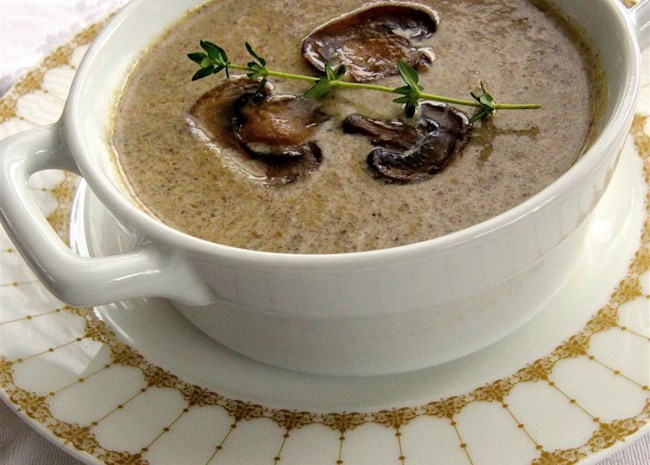

Mushroom Soup

Description:
This is one of my favorite soups of all time. It is so easy. The secret to this deep, rich soup is a long slow caramelization, the key to unlocking the mushroom's magic. This is just pure essence of mushroom.
Ingredients
- 1/4 cup unsalted butter
- 2 pounds sliced fresh mushrooms
- 1 pinch salt
- 1 yellow onion, diced
- 1 1/2 tablespoons all-purpose flour
- 6 sprigs fresh thyme
- 2 cloves garlic, peeled
- 4 cups chicken broth
- 1 cup water
- 1 cup heavy whipping cream
- 1 pinch salt and freshly ground black pepper to taste
- 1 teaspoon fresh thyme leaves for garnish, or to taste
Instructions
- Melt butter in a large soup pot over medium-high heat; cook mushrooms in butter with 1 pinch salt until the mushrooms give off their juices; reduce heat to low. Continue to cook, stirring often, until juices evaporate and the mushrooms are golden brown, about 15 minutes. Set aside a few attractive mushroom slices for garnish later, if desired. Mix onion into mushrooms and cook until onion is soft and translucent, about 5 more minutes.
- Stir flour into mushroom mixture and cook, stirring often, for 2 minutes to remove raw flour taste. Tie thyme sprigs into a small bundle with kitchen twine and add to mushroom mixture; add garlic cloves. Pour chicken stock and water into mushroom mixture. Bring to a simmer and cook for 1 hour. Remove thyme bundle.
- Transfer soup to a blender in small batches and puree on high speed until smooth and thick.
- Return soup to pot and stir in cream. Season with salt and black pepper and serve in bowls, garnished with reserved mushroom slices and a few thyme leaves.